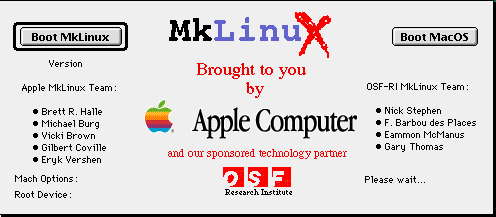

A Journey of Shells
Take Control of Your Command Line Environment
Presented by Dan Stone / @dafstone
In the Beginning there was sh
- 1971 - First Iteration of sh was the "Thompson Shell". This was designed to separate the operating system kernel from userspace
- 1973 - Douglas McIlroy Introduced the first concept of basic piping, including "<", ">" and later "|" (after some experimentation)
- 1977 - The Bourne shell was born.
- 1978 - I was born!
Wow, that all happened before I was Born!
(A little about my history with *NIX)
I was raised in NYC
ISPs: Mindvox, Panix, Interport
First Exposure to Linux... 1996 - MkLinux on the PowerPC

Since Then:
Built over 1000 Servers (okay, that's an estimate)
Worked at different stages of my life with SuSE, RHEL, CentOS, Ubuntu, and Arch Linux
Done provisioning with Puppet, Chef, and Ansible
Consider myself versed in Nginx, Apache, Bind, Postfix, and other "Core" applications. (Even IIS... a little)
So... why am I telling you this??
Why am I telling you this?
With 20 Years of *NIX Experience... I never thought too much about the actual environment I was working in.
I started to ask myself... am I the User or the Admin?
1977 - The Bourne Shell.
( a.k.a /bin/sh )
- Allows shell scripts to be used as filters.
- Filter - processes a stream, to produce another stream.
- 1977 - The Bourne shell was born.
- Demo!
A very, very brief history of UNIX Shells
- 1971 - First Iteration of sh was the "Thompson Shell". This was designed to separate the operating system kernel from userspace
- 1973 - Douglas McIlroy Introduced the first concept of basic piping, including "<", ">" and later "|" (after some experimentation)
- 1977 - The Bourne shell was born.
- 1978 - C Shell: BSD, "C"-link scripting, command history, aliasing.
- 1981 - tcsh: Proto-Autocompletion, advanced command history. Trivia: First default shell of OS X
- 1983 - Korn Shell: vi and emacs editing modes (later readline)
- 1989 - Bourne Again Shell (bash): First legitimately "Free" shell. Standard for linux, the shell most of us use today.
Let's talk about Bash
GNU Readline
- Handles command history.
- Provides bash with line editing: emacs and vi-edit modes.
- Configured in
.bashrc or .inputrc
- Can also provide these tools to cli programs that are not bash
Let's talk about Bash
Your Environment and it's Variables
- More or less just like variables in any programming environment.
- Can be saved through declaration:
export FOO=bar
- A set of standard varibles for common needs: -
TERM for your terminal type- EDITOR for your editor- PATH to indicate where to find programs you can run- PS1 for your terminal prompt
- However - remember anything can be a variable, so you can use enviroment variables for anything.
A very, very brief history of UNIX Shells (again)
- 1971 - First Iteration of sh was the "Thompson Shell". This was designed to separate the operating system kernel from userspace
- 1973 - Douglas McIlroy Introduced the first concept of basic piping, including "<", ">" and later "|" (after some experimentation)
- 1977 - The Bourne shell was born.
- 1978 - C Shell: BSD, "C"-link scripting, command history, aliasing.
- 1981 - tcsh: Proto-Autocompletion, advanced command history.
- 1983 - Korn Shell: vi and emacs editing modes (later readline)
- 1989 - Bourne Again Shell (bash): First legitimately "Free" shell. Standard for linux, the shell most of us use today.
- 1990 - The Z Shell (zsh): Programmable completion, spelling correction, themeable prompts. Made of pure awesome.
Let's talk about Zsh
The ultimate shell to rule the whole planet.
- Improved Tab Completion
- Improved Globbing
- Improved Array Handling
- Fully Customizable
- No more readline - now we have ZLE
Reccomended Resources
- The Arch Wiki - best linux documentation ever.
- Oh My Zsh! - Zsh Framework, dive right in.
- Github Dotfiles - Trove of other peoples cool dotfiles.
- *NIX Man Pages - delivering awesome learning since 1971